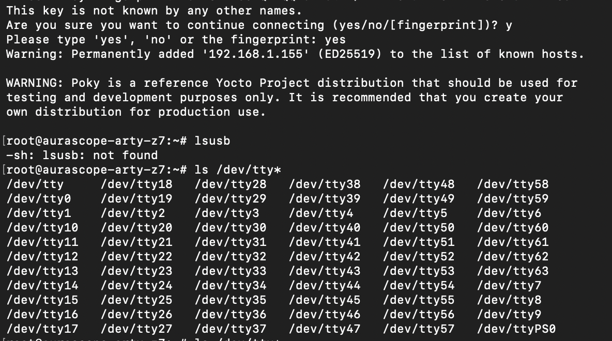

Custom image & recipe
The goal
Step 01 got a machine generated from the real .xsa, but nothing had actually
built yet. meta-aurascope was still just a layer skeleton — conf/layer.conf
and nothing else — and local.conf still defaulted MACHINE to
qemux86-64. The goal here was bitbake aurascope-image succeeding for
the real board, not the QEMU stand-in.
The image recipe
meta-aurascope/recipes-core/images/aurascope-image.bb, modeled directly on poky's
core-image-minimal.bb:
SUMMARY = "AuraScope base image for the Arty Z7-20 (Zynq-7000)"
LICENSE = "MIT"
inherit core-image
IMAGE_INSTALL = "packagegroup-core-boot ${CORE_IMAGE_EXTRA_INSTALL}"
IMAGE_ROOTFS_SIZE ?= "8192"
IMAGE_ROOTFS_EXTRA_SPACE:append = "..."
Setting MACHINE = "aurascope-arty-z7" in build/conf/local.conf was
enough on its own to get this building for QEMU. Pointing it at the real board is where it
got interesting.
Bug: XILINX_WITH_ESW ordering in the generated machine conf
First real-board parse failed with virtual/dtb, fsbl, and
virtual/bitstream all reporting "Nothing PROVIDES". The cause was inside the
generated build/conf/machine/aurascope-arty-z7.conf itself:
# Required generic machine inclusion require conf/machine/zynq-generic.conf <- was BEFORE this # This is an 'XSCT' based BSP XILINX_WITH_ESW = "xsct" <- ...this
zynq-generic.conf's own comment says hardware-specific variables must be set
before its require, because several PREFERRED_PROVIDER
defaults in meta-xilinx-core/conf/machine/include/machine-xilinx-default.inc key
off XILINX_WITH_ESW at parse time:
PREFERRED_PROVIDER_virtual/dtb ??= "${@'device-tree' if d.getVar('XILINX_WITH_ESW') else ''}"
gen-machineconf's own source
(meta-xilinx-core/gen-machine-conf/lib/yocto_machine.py,
YoctoXsctConfigs()). Its own comment states the same ordering requirement — then
the function emits the require line before XILINX_WITH_ESW = "xsct"
anyway. It reappears every time gen-machineconf regenerates the file; I had to
reapply the fix after re-running it.
Fix: move the XILINX_WITH_ESW line above the require line.
I re-ran gen-machineconf once meta-aurascope actually had a
recipes-* directory to work with — the earlier run had warned
"No bb files in default matched BBFILE_PATTERN_meta-aurascope", which is why it
never dropped anything useful into the layer the first time:
./meta-xilinx/meta-xilinx-core/gen-machine-conf/gen-machineconf \ --soc-family zynq \ --hw-description aurascope/hw/design_2_wrapper.xsa \ --machine-name aurascope-arty-z7 \ --xsct-tool /opt/2025.2/Vitis
Device tree
device-tree.bb (in meta-xilinx-core) self-skips unless
CONFIG_DTFILE or SYSTEM_DTFILE is set:
def check_devicetree_variables(d):
if not d.getVar('CONFIG_DTFILE'):
raise bb.parse.SkipRecipe(...)
Nothing in the "xsct" flow (used for Zynq-7000 — System Device Tree / lopper-based generation
is ZynqMP+/Versal only) ever sets this. The YAML_CONSOLE_DEVICE_CONFIG /
YAML_MAIN_MEMORY_CONFIG variables that gen-machineconf writes into
the machine conf for "xsct" mode are, as far as I can tell, dead in this meta-xilinx release —
I grepped the whole tree and nothing outside gen-machineconf itself reads them.
Rather than hand-write a full Zynq-7000 SoC-level device tree from scratch (real risk of subtly wrong clock/interrupt indices, hard to debug without hardware in hand), I added:
meta-aurascope/recipes-bsp/device-tree/device-tree.bbappendmeta-aurascope/recipes-bsp/device-tree/files/system-top.dts
The bbappend re-enables devicetree.bbclass's normal KERNEL_INCLUDE
default (device-tree.bb blanks it out by default — "Since we're not based on a
kernel default to nothing"), so system-top.dts can #include
"zynq-7000.dtsi" and pull in the real, maintained dtsi shipped by linux-xlnx
instead of a hand-copied one. This also auto-adds a do_compile dependency on
virtual/kernel:do_configure, so the kernel source is staged first.
system-top.dts itself is intentionally minimal for now: a memory node sized for
the Arty Z7-20's 1 GiB DDR3L, chosen/stdout-path set to ttyPS0,
uart0 forced on. No PL/AXI-GPIO nodes yet — see the bitstream section below.
zynq-7000.dtsi matches what linux-xlnx ships — it's the
mainline/mostly-universal name across Xilinx forks, but I hadn't confirmed it against this
specific branch yet. Update: it resolved cleanly — see the boot bring-up
below for what the real build actually needed on top of this minimal file.
Bitstream — deferred, not solved
xilinx-bootbin (builds BOOT.bin) pulls in
virtual/bitstream by default via BIF_BITSTREAM_ATTR, which defaults
to "bitstream" unless MACHINE_FEATURES contains
"fpga-overlay". Rather than sourcing an actual .bit file (would need
Vivado to build/export one separately from the .xsa, or the .xsa to
embed it), I set:
BIF_BITSTREAM_ATTR = ""
in build/conf/local.conf. Meaning:
BOOT.bin ships FSBL + u-boot + device tree but does
not configure the PL. Linux still boots fine — PS and PL are independent on
Zynq-7000 — but AXI GPIO and anything else in the fabric won't be accessible until the
bitstream is loaded, either at boot (revisit this) or later via fpga-manager. Fine for "first
boot," but this will need revisiting for the audio-status LED step, since that's
AXI GPIO in the PL.
FSBL — the hard part
fsbl.bb (in meta-xilinx-core) also self-skips unless it's handed a
precompiled fsbl.elf via FSBL_FILE, or FSBL_DEPENDS /
FSBL_MCDEPENDS point at something that builds one. Three things tried, in order.
a) meta-xilinx-standalone's "fsbl-fw" multiconfig. A ready-made template —
conf/multiconfig/fsbl-fw.conf + recipes-bsp/embeddedsw/fsbl-fw-cfg.inc
already exist: BBMULTICONFIG += "fsbl-fw", a separate TMPDIR,
DISTRO=xilinx-standalone with a real arm-xilinx-eabi toolchain.
Wired it up — the multiconfig parsed fine, mc:fsbl-fw context showed
TARGET_SYS=arm-xilinx-eabi, DISTRO=xilinx-standalone, correct — but
the task graph failed:
ERROR: Task mcdepends on non-existent task
mc:fsbl-fw:.../fsbl-firmware_2025.2.bb:do_deploy
fsbl-firmware.inc and
xlnx-embeddedsw.bbclass in full to confirm: in "xsct" ESW mode, this recipe only
fetches the Xilinx embeddedsw git source. No do_compile, no do_install,
no do_deploy at all — it genuinely does nothing beyond the source fetch. Verified
with bitbake -c deploy mc:fsbl-fw:fsbl-firmware →
"Task do_deploy does not exist for target fsbl-firmware".
b) Switched XILINX_WITH_ESW from "xsct" to "generic". This mode's
fsbl-firmware_generic.inc does have real do_install/do_deploy
tasks — compiles zynq_fsbl from embeddedsw source via a Makefile and the
multiconfig's cross-compiler. Looked promising, until:
SKIP_MSG:zynq = "Generic support for zynq is not available"
fsbl-firmware_*+git-generic.inc has
this — deliberately, permanently disabled for Zynq-7000 upstream. "generic" mode looks to be
supported only for zynqmp/versal in this meta-xilinx release. Reverted
XILINX_WITH_ESW back to "xsct".
c) Built fsbl.elf directly with Vitis, outside bitbake. Vitis 2025.2 is the
"unified" IDE; found a working example at
/opt/2025.2/Vitis/cli/examples/embedded/platform_uc4_zynq.py and adapted it —
headless, via vitis -s script.py:
client = vitis.create_client()
client.set_workspace(workspace)
platform = client.create_platform_component(
name='aurascope_platform',
hw_design='/path/to/aurascope/hw/design_2_wrapper.xsa')
platform.add_domain(name='standalone_a9_0',
cpu='ps7_cortexa9_0', os='standalone')
platform.build()
fsbl.elf (91345 text / 10904 data /
76300 bss), using ps7_init.c generated fresh from the .xsa's
hardware description — a good sanity check that the .xsa itself is valid and
complete. Output landed at
<workspace>/aurascope_platform/export/aurascope_platform/sw/boot/fsbl.elf.
Copied it into the repo and wired it into the recipe:
meta-aurascope/recipes-bsp/embeddedsw/files/fsbl.elf
meta-aurascope/recipes-bsp/embeddedsw/fsbl.bbappend
FSBL_FILE := "${THISDIR}/files/fsbl"
:= vs = bug: first attempt used =
instead of := for that assignment — silently wrong. THISDIR only
resolves to the bbappend's own directory if captured immediately (:=) at parse
time; with a plain = it's re-evaluated later, when the anonymous
python() check actually reads FSBL_FILE — by which point
THISDIR had reverted to fsbl.bb's own directory
(meta-xilinx-core/recipes-bsp/embeddedsw), not the bbappend's. This is exactly
why the standard FILESEXTRAPATHS:prepend := "${THISDIR}/files:" idiom always
uses := — good one to remember.
One more red herring along the way: meta-xilinx-standalone ships its own
competing fsbl.bbappend, at higher layer priority than
meta-aurascope (7 vs 6), which redefines check_fsbl_variables() with
a slightly different error message but the same underlying logic. Not a conflict — just made
the error text look like it was coming from somewhere other than expected.
The real build, and a silent board
bitbake -n aurascope-image (dry run) had confirmed the plan: 4637 tasks, 0 missing
providers. Running it for real — then flashing to SD and powering up the actual board — was a
different story. The board was completely silent on serial for several days.
Everything I could think to suspect turned out correct: SD cards, QSPI, BootROM, PS7 clocks,
DDR, MIO routing, the FSBL binary's integrity. The real cause was two missing properties in
system-top.dts — the file from the section above.
| Root cause | Mechanism | Symptom |
|---|---|---|
Missing serial0 alias |
chosen/stdout-path referenced serial0, but the aliases
zynq-7000.dtsi provides are only uart0/uart1
(Xilinx naming). U-Boot couldn't resolve the console node. |
No serial driver found → CONFIG_REQUIRE_SERIAL_CONSOLE=y forced a reset
→ continuous boot loop. |
Missing ps-clk-frequency |
zynq-7000.dtsi defaults to 33.333 MHz. The Arty Z7's PS clock is
50 MHz, so every derived clock was off by a factor of 1.5. |
UART transmitted at ~172800 baud while the terminal listened at 115200 — consistent, non-random character corruption. |
A third issue wasn't a bug but the single biggest obstacle to diagnosing the first two: the committed FSBL had debug printing compiled out entirely, so "no output" carried no information about how far boot had actually gotten. More on that below.
Fix 1 — the serial0 alias
zynq-7000.dtsi's aliases node defines uart0 and
uart1 — the Xilinx convention. Both U-Boot and Linux resolve
stdout-path and console=ttyPS0 through the standard names
serial0/serial1. Those aliases didn't exist, so no console device was
ever bound. Confirmed by decompiling the generated u-boot.dtb: its aliases block
listed uart0, uart1, spi0, qspi, gem0, sdhci0, clkc … — no serial0 —
while chosen still referenced stdout-path = "serial0:115200n8".
/ {
aliases {
serial0 = &uart0;
serial1 = &uart1;
};
};
aliases node has to sit inside the root
/ { … } braces. Aliases merge rather than replace, so uart0/uart1
and everything else inherited from the .dtsi survive. Putting it at the top level,
between the #include and / {, produced
system-top.dts:3.1-8 syntax error — Unable to parse input tree.
Verification:
dtc -I dtb -O dts \
tmp/deploy/images/aurascope-arty-z7/u-boot.dtb 2>/dev/null \
| grep -A25 aliases | grep serial
# expect: serial0 = "/axi/serial@e0000000";
Fix 2 — the PS clock frequency
The clkc@100 node carried no ps-clk-frequency property, so the Zynq
clock driver fell back to its built-in default of 33,333,333 Hz — correct for most Xilinx
reference boards, but not the Arty Z7's 50 MHz PS clock. Every derived clock, including
uart_ref_clk, was 1.5× off, and the UART baud divisors were computed from the
wrong base.
&clkc {
ps-clk-frequency = <50000000>;
};
Corroborated by reading the divisors live off the hardware, rather than just trusting the fix:
| Step | Value |
|---|---|
| Observed on hardware | UART0 CD = 124, BDIV = 6 (via mrd 0xE0000018 / 0xE0000034) |
| Implied reference clock | 115200 × 124 × 7 = 99,993,600 Hz ≈ 100 MHz |
| SLCR divisor | 0xF8000154 bits [13:8] = 0x0A = 10 |
| Implied IO PLL | 100 MHz × 10 = 1000 MHz |
| Implied PS clock | 1000 MHz ÷ 20 = 50 MHz — matches the fix |
| Kernel confirmation | ttyPS0 … base_baud = 6250000 = 100 MHz ÷ 16 |
Fix 3 — enabling SDHCI0
With the console working, U-Boot reached its prompt but reported MMC: (empty) and
No MMC device available — it couldn't read the very card it had just been loaded
from. zynq-7000.dtsi defaults sdhci0 to status = "disabled".
&sdhci0 {
status = "okay";
};
After this, U-Boot found /boot.scr on mmc 0:1 and the full boot chain
completed. Ethernet (gem0) came up in the same rebuild.
The final system-top.dts
All three fixes landed with comments explaining why, since neither is self-evident from the symptom:
/dts-v1/;
#include "zynq-7000.dtsi"
/ {
model = "AuraScope Arty Z7-20";
compatible = "digilent,zynq-artyz7", "xlnx,zynq-7000";
/* REQUIRED: zynq-7000.dtsi provides only the Xilinx-style
* uart0/uart1 aliases. U-Boot and Linux resolve the console
* through the standard serial0/serial1 names. Without these,
* stdout-path cannot resolve, no console binds, and
* CONFIG_REQUIRE_SERIAL_CONSOLE=y resets the board in a loop. */
aliases {
serial0 = &uart0;
serial1 = &uart1;
};
/* Arty Z7-20: 1 GiB DDR3L. */
memory@0 {
device_type = "memory";
reg = <0x0 0x40000000>;
};
chosen {
bootargs = "console=ttyPS0,115200 root=/dev/mmcblk0p2 rw rootwait";
stdout-path = "serial0:115200n8";
};
};
&uart0 {
status = "okay";
};
/* REQUIRED: zynq-7000.dtsi defaults ps-clk-frequency to 33.333 MHz.
* The Arty Z7 PS clock is 50 MHz. Without this override every derived
* clock is 1.5x low and the UART transmits at ~172800 baud. */
&clkc {
ps-clk-frequency = <50000000>;
};
&sdhci0 {
status = "okay";
};
The real obstacle: an FSBL that couldn't tell me anything
Not a boot bug, but the single largest reason this took days instead of hours: the committed
fsbl.elf (from the Vitis build in the section above) had debug printing compiled
out.
$ strings fsbl.elf | grep -i fsbl_dbg
fsbl_printf(type,...) if (((type) & fsbl_dbg_current_types)) { xil_printf(...); }
fsbl_dbg_current_types 0
fsbl_printf call was optimized away
and the format strings don't appear in the binary at all. A perfectly healthy FSBL and a
completely broken one look identical on the wire until this is fixed — which meant the first
few days of debugging were aimed at the wrong layer entirely.
Rebuilt with FSBL_DEBUG_INFO defined (Vitis: project → C/C++ Build Settings → ARM v7 gcc compiler → Symbols; equivalent headless flow):
xsct
platform create -name arty_fsbl -hw hw/design_2_wrapper.xsa \
-os standalone -proc ps7_cortexa9_0
app create -name fsbl -template {Zynq FSBL} -platform arty_fsbl \
-domain standalone_ps7_cortexa9_0
app config -name fsbl -add define-compiler-symbols FSBL_DEBUG_INFO
app build -name fsbl
# verify before installing:
strings fsbl.elf | grep -i "first stage" # must return the banner string
Xilinx First Stage Boot Loader ·
Boot mode is SD · SD: rc= 0 · SD Init Done ·
Handoff Address: 0x04000000 · SUCCESSFUL_HANDOFF ·
FSBL Status = 0xE0000000. FSBL had been working correctly the entire time — this
immediately eliminated FSBL, SD hardware, BootROM, and the boot image layout, and moved the
investigation to U-Boot, which is where the serial0 alias fix actually lived.
FSBL_DEBUG_INFO enabled for development
builds. A boot loader that can't report its own progress turns a one-line configuration bug
into a multi-day investigation.
U-Boot notes
A temporary debug-UART config fragment bypassed U-Boot's driver model and device-tree probing
entirely, to get an early console. It's what produced the decisive
No serial driver found message that pointed at the alias problem in the first
place. Removed once the real fix landed, but worth keeping in the layer, commented out, for
future early-boot debugging:
# meta-aurascope/recipes-bsp/u-boot/files/debug-uart.cfg (removed)
CONFIG_DEBUG_UART=y
CONFIG_DEBUG_UART_ZYNQ=y
CONFIG_DEBUG_UART_BASE=0xe0000000
CONFIG_DEBUG_UART_CLOCK=100000000
CONFIG_DEBUG_UART_ANNOUNCE=y
Everything else in the U-Boot config was already correct and didn't need touching:
| Config | Value / note |
|---|---|
UBOOT_MACHINE | xilinx_zynq_virt_defconfig |
CONFIG_TEXT_BASE | 0x4000000 — matches the FSBL handoff address |
CONFIG_XILINX_OF_BOARD_DTB_ADDR | 0x100000 — matches the FSBL partition 2 load address |
CONFIG_REQUIRE_SERIAL_CONSOLE | y — this is what turned the console-bind failure into a hard reset |
CONFIG_DEFAULT_DEVICE_TREE | "zynq-zc706" — unused, overridden by the external DTB at 0x100000. A red herring during diagnosis, not a bug. |
Diagnostic pitfalls worth not repeating
Several observations were actively misleading during the investigation:
| Observation | Assumed | Actually |
|---|---|---|
| Serial silence on early tests | Board not booting | A stale minicom held /dev/ttyUSB1 in an unwatched window; output went to an invisible buffer. |
| Boot mode jumper labelled SD | Board booting from SD | Jumper was on QSPI. Confirmed only via BOOT_MODE (0xF800025C = 0x5 = SD). Every prior "SD test" had actually been a QSPI boot. |
PC = 0x5490 when halted | Stuck in BootROM | XGlobalTimer_ModifyInterval inside FSBL's polled SD read — normal polling, caught mid-transfer. |
PC = 0x0409cae8 after run | Runaway / crash | Program had completed; main() returned and the CPU ran into unwritten DDR. |
Repeated stack in Xil_WaitForEvents | SD transfer hang | Polled-mode read spends nearly all its time there; halting at random lands in that loop with near-certainty. |
xsct "Invalid context" | Flaky JTAG cable | The CPU was resetting between commands — the reset loop itself, surfacing as a tooling error. |
Result
Board boots end to end: FSBL → U-Boot → boot.scr → uImage +
system.dtb → Linux → login prompt. Root filesystem mounts r/w on
mmcblk0p2, Ethernet links at 100 Mbps, console on ttyPS0. Two
device-tree properties were responsible for the entire multi-day failure; everything else
investigated (SD cards, QSPI, BootROM, PS7 clocks, DDR, MIO routing, FSBL integrity,
bare-metal toolchain) was ruled out by direct evidence, not inference, and didn't need fixing.
| Stage | Expected output | Meaning |
|---|---|---|
| FSBL | SUCCESSFUL_HANDOFF / FSBL Status = 0xE0000000 | Both partitions loaded; jumped to U-Boot at 0x04000000 |
| U-Boot | Model: AuraScope Arty Z7-20 · DRAM: 1 GiB · MMC: mmc@e0100000: 0 | Console bound, DDR sized, SD controller probed |
| Script | Found U-Boot script /boot.scr | Partition 1 readable; boot script executing |
| Kernel | ttyPS0 … base_baud = 6250000 | Clock tree correct — confirms ps-clk-frequency |
| Rootfs | EXT4-fs (mmcblk0p2) … re-mounted r/w | Root filesystem mounted; init running |
Still outstanding
Nothing here blocks the next step, but all of it is real and worth tracking rather than rediscovering later:
| Item | Detail | Suggested action |
|---|---|---|
| Random MAC address | eth0 gets a new random MAC every boot, so the DHCP lease changes too. | Add local-mac-address to &gem0; reserve the address on the router. |
| DHCP race | udhcpc gives up before the PHY finishes autonegotiation; link comes up after the login prompt. | Wait for carrier in /etc/network/interfaces, or move to systemd-networkd. |
| No SSH daemon | sshd nor dropbear is installed.dropbear added to IMAGE_INSTALL and confirmed working over the network. See below. | Done. |
| U-Boot environment | No Valid Environment Area found — saveenv won't persist. | Configure CONFIG_ENV_IS_IN_FAT for partition 1. |
| Prebuilt FSBL | fsbl.bbappend supplies a committed ELF with an empty DEPENDS, so the .xsa isn't consumed by the build and can silently drift from it. | Re-evaluate the meta-xilinx-standalone build path, or add a CI check comparing the FSBL's ps7_init against the current .xsa. |
| No RTC | hwclock: can't open '/dev/misc/rtc' — expected on this board. | Add NTP, or accept a fixed epoch at boot. |
system-top.dts with the explanatory
comments intact. Neither serial0 nor ps-clk-frequency is
self-evident, and both would be easy to lose in a future refactor of the device tree.
SSH is in. USB isn't — yet
With the board on the network, dropbear came up cleanly — no separate debug
session needed anymore, just SSH from a normal terminal:
$ ssh root@192.168.1.155 The authenticity of host '192.168.1.155' can't be established. This key is not known by any other names. Are you sure you want to continue connecting (yes/no/[fingerprint])? yes Warning: Permanently added '192.168.1.155' (ED25519) to the list of known hosts. WARNING: Poky is a reference Yocto Project distribution that should be used for testing and development purposes only. It is recommended that you create your own distribution for production use. root@aurascope-arty-z7:~#

Next thing to check was whether the nRF5340 audio receiver — plugged into the board's USB host port — was visible at all. It wasn't, and the first attempt didn't even get far enough to say so properly:
root@aurascope-arty-z7:~# lsusb -sh: lsusb: not found root@aurascope-arty-z7:~# ls /dev/tty* /dev/tty /dev/tty18 /dev/tty28 /dev/tty38 /dev/tty48 /dev/tty58 ... (tty0-tty63, all virtual consoles) ... /dev/ttyPS0
lsusb is missing because
usbutils was never added to IMAGE_INSTALL — a real gap, but a minor
one-line fix for a future rebuild. The more important signal is in the second command: only
the expected virtual consoles and ttyPS0 show up. No ttyUSB*, no
ttyACM*, nothing at all from the USB host controller — the nRF5340 isn't
enumerating.
The likely cause isn't software: the board was still running powered from the JTAG/prog USB connector during this test, which is enough to boot Linux but not enough current to also power a downstream USB host port and whatever the nRF5340 dev kit draws while acting as a UAC device. Two things to change before re-testing:
- Switch the board to the dedicated 12 V wall power supply instead of USB/JTAG power.
- Move the
JP5jumper to select that external supply as the power source.
With real power behind the USB host port, the next check is whether the nRF5340 receiver's UAC firmware actually enumerates as a USB sound card — that's the real goal of the wireless audio phase, and the natural next step once power is sorted.
Code
Tagged at v0.2-custom-recipe · code: meta-aurascope